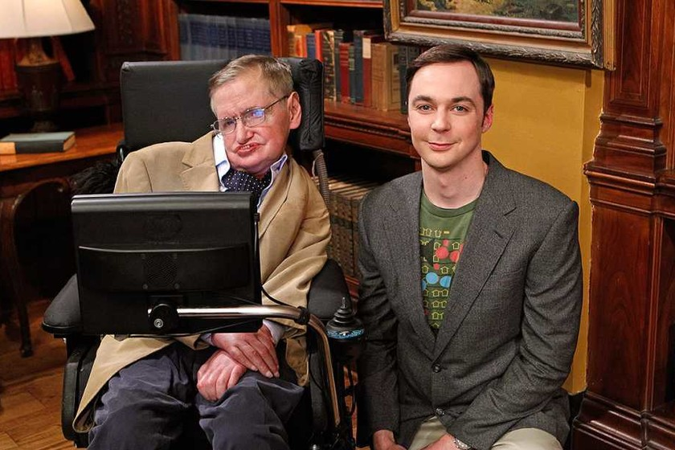

La radiación de Hawking es un tipo de radiación que emiten los agujeros negros por los efectos cuánticos en su horizonte de sucesos y que hace que estos monstruos cósmicos se evaporen.
Cuantas más respuestas encontramos sobre los misterios del Universo, más preguntas surgen. Y es que el Cosmos, con una edad de 13.800 millones de años y un diámetro de 93.000 millones de años luz, contiene cuerpos celestes que parecen jugar con las leyes de la física y que, en muchas ocasiones, nos han llevado a adentrarnos en el lado más inquietante de la ciencia.
Pero lo que está claro es que de entre todos los objetos que alberga el Universo, hay unos que, por su naturaleza misteriosa y en gran parte incomprensible, nos fascinan especialmente: los agujeros negros. Formados por la muerte de una estrella hipermasiva, los agujeros negros son una singularidad en el espacio-tiempo. Una región en cuyo interior, las leyes físicas de la relatividad dejan de funcionar.
No sabemos qué hay en el corazón del agujero negro ya que ni siquiera la luz puede escapar de su atracción. A ese nivel, los efectos cuánticos se hacen más notorios, así que hasta que no tengamos una teoría completa de la gravedad cuántica, jamás sabremos qué hay más allá del horizonte de sucesos.
Pero hay una cosa que creíamos tener clara: nada puede escapar de un agujero negro. Pero esta idea cambió cuando, en el año 1974, Stephen Hawking planteara la existencia de una forma de radiación emitida por estos agujeros negros y que provocaría su evaporación. La radiación de Hawking. Prepárate para que te estalle la cabeza, porque hoy nos sumergiremos en los increíbles misterios de esta forma de energía que hace que los agujeros negros se desintegren lentamente.
¿Qué son los agujeros negros?
Antes de comprender qué es la radiación de Hawking, debemos comprender (en la medida de lo posible) qué son los agujeros negros. Y para ello, nuestro viaje empieza con una estrella muy grande. Mucho más que el Sol. De hecho, necesitamos una estrella con una masa más de 20 veces mayor que la del Sol.
Cuando una estrella hipermasiva empieza a agotar su combustible, comienza a colapsar bajo su propia gravedad ya que no hay reacciones de fusión nuclear que tiren hacia fuera, solo su propia masa, que tira hacia dentro. Cuando definitivamente muere, el colapso gravitatorio deriva en una explosión en forma de supernova, pero en el núcleo moribundo de la estrella, presa de una gravedad inmensa, se rompe por completo la materia.
No es que se rompan las partículas. Directamente se rompe la materia. Se forma una singularidad. Un punto en el espacio-tiempo cuya densidad tiende hacia el infinito y que genera una atracción gravitatorio tan inmensa que ya no solo es que la materia no pueda escapar de él, sino que ni siquiera la radiación electromagnética puede huir del mismo.
En esta singularidad, las leyes físicas dejan de funcionar. Todas aquellas predicciones relativistas y cálculos matemáticos que tan bien explican el funcionamiento del Universo se derrumban cuando llegamos al corazón de un agujero negro. Es una región del espacio-tiempo sin volumen, así que, técnicamente, un agujero negro es, en realidad, lo más pequeño que puede existir.
Pero, entonces, ¿por qué los vemos como colosales esferas? Bueno, en realidad, no los vemos. Podemos percibir sus efectos gravitacionales, pero como hemos dicho, ni siquiera la luz puede escapar de su gravedad, así que “ver, ver”, no los vemos. Pero si lo que vemos (que no lo vemos) es un objeto oscuro tridimensional, es por el famoso horizonte de sucesos. Y aquí es donde las cosas empiezan a complicarse.

El horizonte de sucesos: el punto de no retorno
Como hemos visto, el agujero negro (que no tiene nada de agujero) es una singularidad en el espacio-tiempo. Lo que nosotros percibimos como ese monstruo astronómico viene marcado por el conocido como horizonte de sucesos, el cual designa el radio en el que la luz ya no puede escapar de la atracción gravitatoria de la singularidad.
Para nosotros, el agujero negro es una superficie imaginaria que rodea a la singularidad, que es el corazón del agujero negro. En este horizonte de sucesos, la velocidad de escape (la energía necesaria para escapar de la atracción gravitatoria de un cuerpo) coincide con la velocidad de la luz en el vacío. Es decir, justo en el horizonte de sucesos, necesitarías desplazarte a 300.000 km/s para evitar ser engullido por la singularidad.
Y como nada puede desplazarse exactamente a la velocidad de la luz ni mucho menos ir más deprisa, a partir de este horizonte, ni siquiera los fotones, que son las partículas subatómicas responsables de la luz, son capaces de huir de su poder de atracción. Por ello, al atravesar el horizonte de sucesos, ya no hay marcha atrás. Es el punto de no retorno. Para escapar de él, tendrías que ir más deprisa que la luz. Y nada puede hacerlo.
Los agujeros negros son negros porque nada puede escapar de ellos. En el horizonte de sucesos, todo está condenado a ser engullido y ser destruido en la singularidad, el punto en el espacio-tiempo donde las leyes del Universo se rompen. Así pues, contemplamos a los agujeros negros como cuerpos celestes de vida infinita. Si nada podía regresar después de atravesar el horizonte de sucesos, los agujeros negros tenían que existir para siempre, pudiendo solo crecer para toda la eternidad.
Pero… ¿Y si los agujeros negros no fueran, después de todo, tan negros? ¿Y si no fueran cuerpos de vida infinita? ¿Y si emitieran radiación? ¿Y si hubiera algo capaz de escapar de la singularidad? ¿Y si los agujeros negros, en esencia, se evaporaran? Estas preguntas fueron las que llevaron a Stephen Hawking a realizar el trabajo más importante de su vida.
1974: Hawking y las explosiones de agujeros negros
Stephen Hawking fue una de las grandes mentes de la historia de la Física y responsable de algunos de los descubrimientos más importantes de la astrofísica moderna. Sufrir ELA, una enfermedad neurodegenerativa contra la que luchó toda su vida y que provocó su muerte el 14 de marzo de 2018 a los 76 años de edad, no impidió que este físico británico resolviera muchas de las incógnitas sobre el Universo que llevábamos décadas intentando descifrar.
Hawking nació el 8 de enero de 1942 en Oxford, Reino Unido. Ya desde joven y pese a que su familia sufriera mucho por el estallido de la Segunda Guerra Mundial, mostró unas aptitudes para las ciencias impropias de un niño tan pequeño. Así pues, ingresó en la University College de Oxford y se graduó en matemáticas y físicas en el año 1962.
Tan solo un año después y a los 21 años de edad, Hawking fue diagnosticado con Esclerosis Lateral Amiotrófica, una enfermedad neurodegenerativa que provoca una lenta pero continua degeneración y muerte de las neuronas del cerebro que inevitablemente termina causando el fallecimiento del paciente cuando la parálisis muscular llega a los órganos vitales.
Los médicos le dijeron que este trastorno iba a acabar con su vida en pocos años. Pero estaban equivocados. Stephen Hawking todavía tenía mucho que vivir y muchas aportaciones que realizar al mundo de la física. Sus limitaciones físicas jamás supusieron un impedimento mental. Y fue así como, tras el diagnóstico de la enfermedad, empezó a trabajar en su doctorado en física teórica, título que obtuvo en 1966.
Hawking estaba obsesionado con los agujeros negros, cuya existencia se desprendía de la teoría de la relatividad de Einstein, y con la obtención de una teoría que unificara todas las leyes del Universo en una sola. Unificar la física cuántica con la física relativista. Obtener la Teoría del Todo. Esta era su mayor aspiración.
Y en la búsqueda de esta meta, plantearía una hipótesis que marcaría el mayor logro de toda su vida. Y teniendo en cuenta que estamos ante una de las figuras científicas más relevantes de la historia moderna, tiene que tratarse de algo muy “gordo”. Y así es.
Era el año 1974. Stephen Hawking publica un artículo en la revista Nature con el título de “¿Explosiones de agujeros negros?”. Un artículo en el que el científico plantea la existencia de una forma de radiación emitida por los agujeros negros y que provocaría su evaporación y consecuente muerte. Una forma de energía que sería bautizada como “Radiación de Hawking”.
Esta teoría es importante no solo por el hecho de romper con la creencia de que nada podía escapar de la singularidad de un agujero negro, sino porque fue la primera vez en la que trabajamos conjuntamente con la teoría de la relatividad y la teoría cuántica. La primera vez que unimos física cuántica y física relativista, dando así un paso gigante en dirección hacia la Teoría del Todo.
En este artículo de 1974 y en uno posterior en 1975, Hawking planteó la posibilidad de que los agujeros negros no fueran tan negros, sino que tuvieran… Fugas. Y es ahora cuando las cosas se van a poner locas. Hablemos ya de la radiación de Hawking.
La Radiación de Hawking: ¿los agujeros negros se evaporan?
La radiación de Hawking es una forma de radiación emitida por los agujeros negros y consistente principalmente en la emanación de partículas subatómicas sin masa debido a los efectos cuánticos que se producen en el horizonte de sucesos. Es una energía que emiten los agujeros negros y que provoca su lenta pero continua evaporación.
La postulación de su existencia fue clave ya que no solo es que permita trabajar conjuntamente con la física cuántica y la física relativista, sino que a diferencia de otras cosas que no se pueden demostrar ya que entramos casi en el terreno de la metafísica (teoría de cuerdas, teoría M, gravedad cuántica de bucles…), es medible. Se puede observar.
La radiación de Hawking consiste básicamente en fotones y otras partículas subatómicas sin masa que son emitidas por el agujero negro. Así pues, los agujeros negros no son tan negros al fin y al cabo. También emiten energía a través del flujo de partículas que emanan del mismo. Son, para poner una metáfora, como un radiador.
La emisión de radiación de Hawking es mayor cuanto menor sea la masa. Es decir, un agujero negro muy masivo emite poca radiación en comparación con uno poco masivo. Y aquí viene el principal problema para detectar esta radiación: los que conocemos son tan masivos que no podemos percibir su radiación ya que esta es ínfima en comparación incluso con el fondo cósmico de microondas.
¿Solución? Ver cómo explotan. ¿Los agujeros negros explotan? Sí. Esta emisión de energía comporta que se produce una evaporación de los agujeros negros. Así pues, llega un momento en el que, después de desintegrarse, exploten liberando todo aquello que ha consumido a lo largo de su vida. Así podríamos confirmar que la radiación de Hawking existe.
¿Problema? El tiempo que tardan en evaporarse por completo y, por tanto, en explotar. Los agujeros negros no son de vida infinita, pero sí que tienen una vida increíblemente larga. Para ponernos en perspectiva, pensemos lo siguiente. De acuerdo a las predicciones matemáticas (recordemos que a menor masa, más rápido se evapora a través de la radiación de Hawking), un agujero negro con una masa de 20 elefantes tardría un segundo en evaporarse por completo. Uno con una masa como la de la Torre Eiffel, 12 días. Uno con la masa del Monte Everest, justo la edad del Universo: 13.800 millones de años. Ah, y por cierto, uno con esta masa tendría el tamaño de un protón.
Y uno con la masa del Sol tardaría varios trillones de trillones de trillones de trillones de años. Pero es que los agujeros negros que conocemos no tienen la masa del Sol. Tienen la masa de muchísimos Soles. Ton 618, el agujero negro más grande descubierto, tiene un diámetro de 390 millones de kilómetros de diámetro y una masa de 66 mil millones de masas solares. Imagina cuánto tardaría en evaporarse. Vamos, que no ha pasado suficiente tiempo en el tiempo como para que un agujero negro de los que conocemos se haya evaporado por completo y haya explotado. Así que lo de detectar la explosión para confirmar la radiación de Hawking, como que no.
¿Solución? Buscar agujeros negros más pequeños. Los menos masivos. Si pudiéramos encontrar agujeros negros que pesaran como el Monte Everest, estaríamos a tiempo de ver una explosión y confirmar que se evaporan. ¿Problema? No hemos visto nada tan pequeño. Solo monstruos.
¿Solución? Crear agujeros negros en un laboratorio. Más que solución, parece el apocalipsis. Pero no. Estamos hablando de micro agujeros negros que, por su masa ínfima, se desintegrarían, evaporarían y explotarían en un instante. El Gran Colisionador de Hadrones podría, en teoría, conseguirlo. ¿Problema? No hemos podido crear ninguno todavía.
¿Solución? Ya no hay más soluciones. Por ahora, somos incapaces de detectar y, por tanto, confirmar la existencia de la radiación de Hawking. Aun así, todo parece encajar y, de hecho, una de las teorías sobre el final de vida del Universo tiene que ver con ella. Una hipótesis de la muerte del Universo habla de cómo llegará un momento, cuando todas las estrellas hayan muerto, en el que en el Cosmos solo existirán agujeros negros.
Y estos, por efecto de la radiación de Hawking y consecuente evaporación, estarán destinados a morir. Y aunque el proceso tarde un tiempo que simplemente es imposible de concebir, el Universo morirá cuando el último agujero negro haya desaparecido. En ese momento, el Universo será únicamente radiación de Hawking. Nada más.